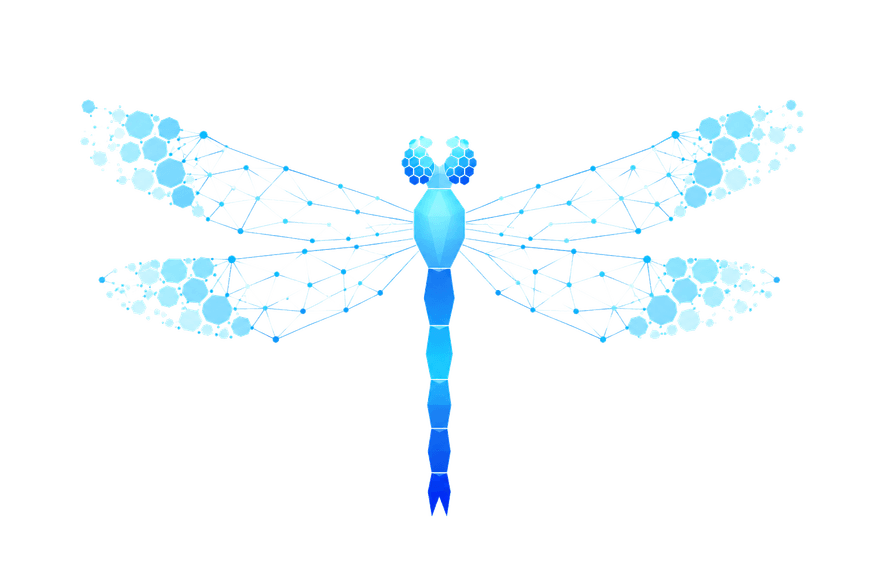

複雑な世界を、複眼で読む。
Read the complexity. Shape the game.
個人・チーム・パフォーマンス・準備・コンディション・環境——
無数の要素が相互に影響し合う複雑系。その関係性の中で、試合の流れは絶えず変化している。
複雑な世界を、複眼で読む。
個人、チーム、パフォーマンス、準備、コンディション、環境—— こうした要素は相互に影響し合い、その関係性の中で、試合の流れやプレーの可能性は常に変化しています。
Odonata は、その複雑な世界を多角的に読み解くためのツールです。
目に見える現象にとどまらず、その背後にある構造、変化の兆し、関係性の連鎖を捉えることで、 現場の意思決定を支え、チームの成長と選手の可能性を最大化します。
複雑な世界を、複眼で読む。そして、ゲームを形づくります。
一面的な数値ではなく、要素どうしの関係性から全体像を立体的に捉える。トンボの複眼のように、世界を多角的に。
散らばったデータをネットワークとしてつなぎ、構造と変化の兆しを可視化。現象の背後にある連鎖を見抜く。
退かず、前へ。読み解いた知見を意思決定につなげ、チームの成長と選手の可能性を最大化する。
Odonata は、トンボの学名です。トンボは大きな複眼を使い、 膨大な情報を複雑に処理しながら獲物を捉え、その行動を瞬時に最適化します。
さらにトンボは、前にしか進まず、退かない——後ろに下がらないその力強い姿から、 古くより武士に縁起の良い 勝ち虫 として愛されてきました。
多くのデータをまとめ、複雑なコンディションを読み解き、勝利に向かって前進するためのツール。 このサービスには、そんな勝ち虫の名前を冠しました。